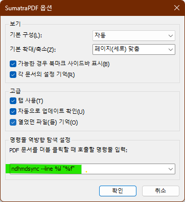
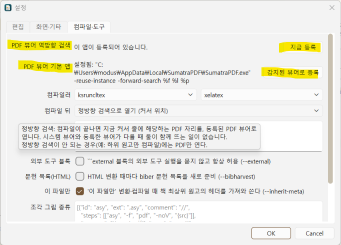

빠른 시작
ndhmdSuite 설치부터 첫 PDF까지
이 문서는 ndhmdSuite를 설치해서 첫 PDF를 뽑기까지만 다룬다. 기능 전체는 ndhmdWriter 설명서와 ndhmd4tex 방언 사양서를 찾아보면 된다.
준비물#
- TeX Live(2026 계열) 또는 MiKTeX이 먼저 설치되어 있어야 한다. 컴파일은 TeX이 한다.
- Windows에서는 별도의 Python 설치가 필요 없다. 설치 프로그램에 모두 들어 있다.
설치 (Windows)#
- 홈페이지에서 ndhmdSuite_Setup.exe를 내려받아 실행한다. 모든 사용자(관리자 권한 필요) 또는 현재 사용자 설치를 고를 수 있다.
- 이전 버전이 있으면 설치 프로그램이 먼저 깨끗이 지울지 묻는다. 지우고 진행하면 된다.
- 언어(영어 또는 한국어)를 고르고 마법사를 따라간다.
설치가 끝나면 다음이 자동으로 되어 있다.
- 설치 폴더가
PATH에 들어가서 명령 프롬프트 어디서나ndhmd4tex같은 명령을 쓸 수 있다. - 컴파일 래퍼
ksruncltex가 설정되어 있다. 따로 설치할 것이 없다. - 바탕화면과 시작 메뉴에 ndhmdwriter 바로가기가 생긴다.
경로에 한글과 공백을 함께 쓰지 않는다. 경로에 한글이 있으면 PDF 뷰어와의 동기화가 되지 않고, 한글과 공백이 둘 다 있으면 컴파일이 오류로 끝난다. 사용자 계정 이름이 한글이면
C:\Users\계정이름\…아래가 모두 여기에 걸리므로, 작업 폴더는C:\work\book처럼 영문·숫자로 된 경로에 둔다.
macOS와 Linux는 ndhmd4tex 저장소의 INSTALLATION.md를 따른다.
처음 실행: 작업공간 고르기#
바로가기로 ndhmdwriter를 실행한다. 처음에는 작업공간 폴더를 고르라는 창이 뜬다. 원고를 모아 둘 빈 폴더(예: C:\work\book)를 만들어 고른다. 다음 실행부터는 마지막 작업공간이 자동으로 열린다. 나중에 바꾸려면 파일 ▶ 작업공간 열기(Ctrl+Shift+O)를 쓴다.
앱은 작업공간 바로 아래의 .md .txt .nmd .mmd 파일만 원고로 본다. 왼쪽 서랍에 원고 목록이 나온다.
첫 원고 쓰기#
Ctrl+N을 눌러 새 원고 hello.md를 만들고 다음을 적는다. 머리말(yaml) 없이 마크다운만 적어도 된다.
# 안녕, ndhmd
이건 **첫 문서**다. *기울임*도 되고, 각주도 됩니다[^a].
[^a]: 각주 예시.Ctrl+S로 저장한다.
PDF 만들기#
컴파일 ▶ 책 컴파일(Ctrl+Shift+B)을 누른다. 앱은 두 단계로 일한다.
- ndhmd4tex가 원고를
hello.tex로 바꾼다. - TeX이
hello.tex를 조판해hello.pdf를 만든다.
hello.tex, hello.pdf 등은 원고와 같은 폴더에 생긴다. 컴파일이 성공하면 PDF가 열린다. SumatraPDF가 있으면 그것으로, 없으면 시스템 기본 뷰어로 열린다.
컴파일 전에 마크업에 실수가 없는지만 보고 싶으면 컴파일 ▶ 마크업 점검(Ctrl+Shift+K)을 쓴다. 컴파일이 실패하면 콘솔 창에 로그가 나오고, 오류 위치로 버튼을 누르면 원고의 해당 줄로 이동한다.
원고와 PDF 오가기#
원고에서 커서를 둔 줄에 해당하는 PDF 자리를 보려면 컴파일 ▶ PDF에서 이 위치 보기(Ctrl+Alt+F)를 쓴다.
반대로 PDF를 더블클릭해서 원고의 해당 줄로 돌아오는 역방향 검색은 처음에 한 번 설정해 두어야 한다. PDF 뷰어는 SumatraPDF를 기준으로 설명한다.
1. SumatraPDF에 역방향 검색 명령 넣기#
SumatraPDF를 실행해 메뉴 ▶ 설정 ▶ 옵션을 연다. 맨 아래 명령줄 역방향 탐색 설정 칸에 다음을 그대로 적고 확인을 누른다.
ndhmdsync --line %l "%f"
2. ndhmdWriter에서 뷰어 등록하기#
ndhmdWriter를 실행(바탕화면 아이콘을 더블클릭)하고 설정 ▶ 환경설정을 연다.
- PDF 뷰어 역방향 검색 줄의 지금 등록을 누른다.
- PDF 뷰어 기본 앱 줄의 감지된 뷰어로 등록을 누른다.

이제 PDF에서 문장을 더블클릭하면 ndhmdWriter가 해당 원고 줄로 커서를 옮긴다. 자세한 동작은 설명서의 역방향 검색을 본다.
문서마다 다르게: front matter#
머리말이 없으면 설치 때 함께 들어온 기본 설정으로 조판된다. 문서마다 바꾸고 싶으면 원고 맨 위에 yaml 머리말을 붙인다.
---
title: 첫 문서
author: 홍길동
toplevel: section
preamble+: |
\usepackage{amsmath,amssymb}
---title,author는\title{},\author{}로 나간다. 본문에\maketitle을 적어야 실제로 찍힌다.toplevel: section은 마크다운#을\section으로 만든다. 기본 설정은chapter이므로 짧은 글에는 이렇게 낮춘다.preamble+:는 기본 프리앰블 뒤에 덧붙는다.preamble:로 적으면 기본 프리앰블을 통째로 갈아치우니, 패키지를 보태는 정도라면 거의 언제나preamble+:가 맞다.
머리말의 나머지 키는 방언 사양서 2장에 있다.
여러 파일로 책 만들기#
장마다 원고를 따로 두고, 책 전체를 담당하는 원고에서 {{파일이름}} 줄로 불러온다. 한 줄에 하나씩, 줄 전체가 {{이름}}이어야 한다.
# 우리 책
{{ch1.md}}
{{ch2.md}}서랍에서 원고를 끌어다 놓으면 앱이 이 줄을 대신 고쳐 준다. 어느 장 파일을 열어 두었더라도 책 컴파일은 책 전체를 만든다. 하나만 보고 싶을 때는 이 파일만 컴파일(Ctrl+Alt+B)을 쓴다.
명령줄에서#
앱 없이 터미널에서도 같은 일을 할 수 있다. 설치 때 PATH가 잡혔으므로 어느 폴더에서나 된다.
ndhmd4tex hello.md --pdfxemarkdown → tex → PDF까지 한 번에 끝난다. 엔진은 --pdfxe(xelatex), --pdflua(lualatex), --pdf(pdflatex) 중에서 고른다. 한글 문서에는 보통 앞의 둘을 쓴다. 옵션 없이 ndhmd4tex hello.md만 실행하면 .tex만 만든다. 설정이 어디서 왔는지 헷갈릴 때는 --dump-meta로 병합된 최종 머리말을 볼 수 있다.
다음에 볼 곳#
- 메뉴와 화면을 하나씩 알고 싶다면 ndhmdWriter 설명서
- 문법을 찾아보려면 ndhmd4tex 방언 사양서. 앱에서는 도움말 ▶ ndhmarkdown ▶ 사양서 / 치트시트로 PDF판을 열 수 있다.
- 바로 변환해 볼 수 있는 ndhmd4tex 예제(GitHub): 논문, 에세이, Beamer, 참고문헌 등
- 단축키 전체는 설명서 부록 A